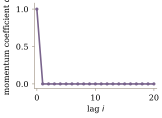
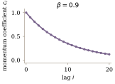
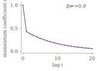

The edge of stability learning rate $\times$ Hessian sharpness = 2 describes a beautiful equilibrium -- optimizers choose their preferred basin shape during descent! But edge of stability has a major limitation: it describes SGD but not Muon, SOAP, or Shampoo, the most performant optimizers. Our work discovers a new equilibrium learning rate $\times$ pathspring = bubbleforce that is generic to any non-adaptive optimizer, including Muon. Surprisingly, our bubbleforce equilibrium is secretly a theory of momentum invoking the geometry of polynomial roots on the complex plane.
Prior work equilibrated $\eta\lambda=2$ for constant-LR, single-optimizer runs. Bubbleforce robustly predicts the sharpness of unmodified, full-featured nanoGPT world records with hybrid Muon/Adam optimization and scheduled LR. In fact, Muon achieves bubbleforce equilibrium so quickly that we can now enforce a curvature schedule using only LR and momentum knobs. We hope that further bubbleforce mechanism research will clarify which aspects of optimizers are / are not self-regularizing -- and thereby aid the design of frontier pretraining optimizers.
A Refresher on Edge of Stability
Optimizers are wondrous creatures. They make decisions.a
Ancient ML folklore taught that for quadratic basins like $L(x)=\frac{1}{2}\lambda x^2$, a learning rate of $\eta=\frac{2}{\lambda}$ would levitate perfectly, maintaining constant loss as it overshot the minimum. Tracing a sad iso-loss contour.
Therefore, smaller LRs than $\frac{2}{\lambda}$ would fall to the minimum and larger LRs would bounce out!
Our job as AI scientists, then, would be to respect the data-given curvature by tuning the LR for convergence. This stability boundary is extremely intuitive (and correct). But in the context of training neural networks, it is completely backwards.
Do Not Be Misled by Descent Lemma and Its Consequences
Claim. Assume a constant-Hessian loss landscape with minimum at the origin: $L^{\prime\prime}(x)\equiv\lambda>0$, with $L(0)=L^{\prime}(0)=0$. For gradient descent with constant learning rate $\eta>0$ and $x_0\ne0$,
$$\underset{\color{red}{\text{converges to minimum}}}{x_t\to0}\quad\underset{\color{red}{\text{iff}}}{\Longleftrightarrow}\quad\underset{\color{red}{\text{LR is tuned to curvature}}}{0<\eta\lambda<2}.$$
Proof. $$\begin{align*} x_{t+1}&=(1-\eta\lambda)x_t \tag{gradient step}\\ x_t&=(1-\eta\lambda)^t x_0 \tag{iterate}\\ x_t\to0&\iff |1-\eta\lambda|<1\\ &\iff\boxed{0<\eta\lambda<2}. \end{align*}$$
The above picture is wrong because optimizers make decisions.
In real loss landscapes, there is a continuum of low-loss, reachable basins with any sharpness we could want.b Even the simplest optimizers choose basins wisely. We can pick any learning rate $\eta$, and the optimizer "skis" into a basin where the curvature adapts to the pre-selected learning rate perfectly to achieve $\lambda=\frac{2}{\eta} \iff \boxed{\eta\lambda=2}$.
The Self-Stabilization Mechanism
Damian et al. (2023) found that Hessian sharpness in constant-LR SGD evolves in 4 phases:
- Progressive sharpening, where $\lambda$ rises up to its equilibrium value $\frac{2}{\eta}$.
- Blowup, where $\lambda > \frac{2}{\eta}$ induces oscillations along the principal Hessian eigenvector.
- Self-stabilization, where 3rd order loss dynamics pull sharpness back to its equilibrium value; oscillations continue to excite.
- Return to stability, where oscillations along the principal Hessian eigenvector finally die out after sharpness re-equilibrates.
Long training runs cycle between the last 3 stages (Figure 2a). The mechanism for Self-stabilization is derived in Theorem 1.
Assume loss $L$’s 3rd order Taylor expansion is a good approximation. Write $W_t=\bar W+x_tu$, where $\bar W$ is the locally time-averaged iterate, $u$ is its unit top Hessian eigenvector, and $S$ is the corresponding simple eigenvalue.
Using $\mathbb E$ for local time averages:
$$\mathbb E[\nabla L(W_t)]\approx\nabla L(\bar W)+\underbrace{\mathbb E[x_t]S(\bar W)u}_{\color{red}{0}}+\underbrace{\frac12\mathbb E[x_t^2]\nabla S(\bar W)}_{\color{red}{\text{sharpness penalty}}}.$$
Thus, oscillations cause a 3rd-order regularization:
$$\boxed{\Delta W_{\mathrm{cubic}}=-\frac{\eta}{2}\mathbb E[x_t^2]\nabla S(\bar W)}\tag{Sharpness-lowering force}$$
The quadratic loss approximation is usually pretty good!d But oscillations get dynamically killed by 3rd order sharpness regularizations. The lifecycle of a loss spike induced by curvature/LR incompatibility proceeds as:
Figure 2a. A reproduction of the Central Flows CIFAR-10 ViT result.e For details, see Appendix A5.
- oscillations begin at $\lambda > \frac{2}{\eta}$
- hard oscillations get harder sharpness regularizations: higher $\mathbb E[x_t^2]$ gives higher sharpness downforce $-\frac{\eta}{2}\mathbb E[x_t^2]\nabla S(\bar W)$
- sharpness suppression continues until oscillations are gone: downforce $-\frac{\eta}{2}\mathbb E[x_t^2]\nabla S(\bar W)\ne0$ for any $\mathbb E[x_t^2]>0$ when $\nabla S(\bar W)\ne0$
This gives a direct mechanism for why the sharpness stabilizes at exactly $\lambda = \frac{2}{\eta} \iff \eta\lambda=2$.
Beyond Raw Gradient Descent
Familiar momentum rules have explicit quadratic stability boundaries:
Momentum $M$ is a linear combination of lagged gradients. A momentum kernel is the vector of linear coefficients $c=(c_0,c_1,\ldots)$ such that
$$M_t=\sum_{j\ge0}c_j\nabla L(W_{t-j}).$$
We adopt the convention $c_0=1$.f Raw SGD and heavy-ball momentum already satisfy this convention.
$$c_i=\begin{cases}1,&i=0,\\0,&i\ge1.\end{cases}$$
Raw SGD is just the trivial momentum kernel.

Edge of stability (Cohen et al., 2021):
$$\eta\lambda=2.$$
Given $0\le\beta<1$,
$c_j=\beta^j$.

Edge of stability (Cohen et al., 2021):
$$\eta\lambda=2(1+\beta).$$
For its stochastic extension, see Andreyev et al. (2026).
With heavy-ball decay $0\le\beta<1$ and Nesterov mixing $0\le\nu\le1$,
$$c_i=\frac{(1-\nu)\mathbf{1}_{i=0}+\nu(1-\beta)\beta^i}{1-\nu\beta}.$$

Edge of stability (Gitman et al., 2019):
$$\eta\lambda=\frac{2(1+\beta)(1-\nu\beta)}{1+\beta-2\nu\beta}.$$
To extend these results to standard reference pretraining implementations like nanoGPT, we need to generalize the edge of stability for:
- minibatch stochasticityh
- heterogeneous optimization, with some parameters optimized by Adam and others by Muon/SOAP
- learning rate scheduling, which would continuously shift the equilibrium curvature $\lambda=\frac{2}{\eta}$.
- spectral geometryi
- momentum from arbitrary linear combinations of lagged gradientsj
Our contribution is that our bubbleforce edge of stability equilibrium $\eta\zeta=\bubbleforce$ handles all of these new considerations simultaneously for real nanoGPT world records and beyond.
Overview
Overview
Optimization trajectories vibrate with oscillatory energy. Every momentum kernel resonates with a different set of oscillation frequencies. For example, raw SGD resonates with period-2 rotations, which causes the classic river-valley oscillations.
Resonant vibrations can be amplified or dampened. Amplification leads to loss spikes and eventually training divergence; a consistently amplified vibration is just another name for an explosion. Our edge of stability theory relies on 3 ideas:
- Every momentum kernel has a characteristic polynomial with complex roots, which are the resonance fingerprint.
- SGD under any momentum kernel equilibrates to $\eta\lambda=\bubbleforce$, where bubbleforce $\bubbleforce$ measures the explosiveness of the momentum kernel via its complex roots.
- Any optimizer whose state is fully specified by the momentum buffer (e.g. SGD, Muon) equilibrates to a generalized law $\eta\zeta=\bubbleforce$, where pathspring $\zeta$ is a novel way to measure sharpness.
Before our formal definitions and theorems, we recommend skimming this visual sketch of bubbleforce theory. The imagery may be helpful in motivating some of the symbolic drudgery.
Deriving Bubbleforce
Every Momentum Kernel Resonates with Something
We will first analyze the simple SGD case as an intuition pump for bubbleforce; our first result will show that prior edge of stability work is a special case of bubbleforce.
Consider a constant-Hessian loss with minimum at the origin:
$$L(W)=\tfrac12\lambda\|W\|^2 \quad\Longrightarrow\quad \nabla L(W_t)=\lambda W_t.$$
We can perturb a single checkpoint in an SGD optimization path and observe the differences in the forked trajectories. Write $\delta W_t=\widetilde W_t-W_t$ and subtract the original trajectory from the perturbed one:
$$\begin{array}{rcll} \widetilde W_{t+1}&=&\widetilde W_t-\eta\lambda\sum_i c_i\widetilde W_{t-i}&\quad\scriptstyle\text{(perturbed trajectory)} \\[0.3em] -\,W_{t+1}&=&-\,W_t+\eta\lambda\sum_i c_iW_{t-i} \\[0.5em]\hline\\[-0.5em] \delta W_{t+1}&=&\delta W_t-\eta\lambda\sum_i c_i\delta W_{t-i}. \end{array}$$
Surprisingly, some (momentum kernel, loss landscape) pairs seem to have a resonance that causes future perturbations to be very predictable.
These orderly perturbations are complex oscillations -- every perturbation rotates the same angle and grows/shrinks by the same factor. We can represent these with complex numbers $z\in\mathbb{C}$, as visualized in Figure 5.
To check whether a specific candidate oscillation $z_{\text{cand}}\in\mathbb{C}$ resonates with a given momentum $c$, learning rate $\eta$, and curvature $\lambda$, we can simply substitute $z_{\text{cand}}^k=\delta W_k$ and check whether $z^{t+1}_{\text{cand}}\overset{?}{=}z^t_{\text{cand}}-\eta\lambda\sum_k c_kz^{t-k}_{\text{cand}}$.
How do we even know there are any resonant oscillations?
We can attempt to solve the equation for all complex roots and reason about whether the root set is empty.
$$\begin{align} z^t-\eta\lambda \sum_k c_k z^{t-k}&=z^{t+1}\tag{Substitute SGD perturbation $\delta W_k$ with $z^k$.}\\ P_{\eta\lambda, c}(z):=z^{t+1}-z^t+\eta\lambda \sum_k c_k z^{t-k}&=0\\ \end{align} $$
Note that $P_{\eta\lambda, c}(z)$ -- the characteristic polynomial of our momentum kernel $c$ at our current conditions $\eta\lambda$ -- is a complex polynomial of degree $t+1$. By the Fundamental Theorem of Algebra, this polynomial has $t+1$ (possibly duplicated) complex roots!
Every momentum kernel has at least one resonant oscillation $z\in\mathbb{C}$.
Bubbleforce is the Root-Radius Constraining Complex Oscillations
As per Figure 5, SGD has an explosive positive-feedback loop from an oscillation $z$ with modulus $|z|>1$. So a necessary condition for training stability is for the largest root -- the root radius -- to be at most 1. This condition forms the foundation of our bubbleforce theory.
For any nonconstant polynomial $P$, its largest root radius is
$$\rho(P)=\max_{P(z)=0}|z|.$$
We can use the definition of bubbleforce on the right to answer the question "Why does the product $\eta\lambda$ equilibrate to 2?".
Why not 1 or 3 or 2.5? What is so special about this constant?
If you grind out the symbolic cruft for descent lemma, the "2" roughly comes from 1d convex functions having a "left side" and a "right side" of the minimum. But this does not generalize to heavyball momentum and certainly not to anything more complicated/arbitrary.
Bubbleforce has a geometric interpretation of SGD's 2, heavy-ball SGD's $2(1+\beta)$, and every other momentum kernel's equilibration point.
Given learning rate $\eta$ and decoupled weight decay $\gamma_{\mathrm{wd}}$, let $P_{\eta\lambda,c}(z)$ be momentum kernel $c$'s characteristic polynomial for curvature $\lambda$.
Suppose we start with very small $\eta\lambda >0$ and increase $\eta\lambda$ over time. Bubbleforce is the first value of $\eta\lambda$ to make $P_{\eta\lambda,c}$'s root locus touch the unit circle:
$$\boxed{\bubbleforce(c)=\min\{\eta\lambda>0\ \text{such that}\ \rho(P_{\eta\lambda,c}(z))=1\}}.$$
Figure 6
On a quadratic loss with fixed Hessian $H\succ0$, learning rate $\eta>0$, and momentum kernel $c$,
$$\boxed{\eta\lambda_{\max}(H)<\bubbleforce\ \Longrightarrow\ \lim_{t\rightarrow\infty}W_t=W^*},$$
where $W^*$ is the minimizer.
Conjecture 1. (SGD+momentum always reaches the bubbleforce equilibrium)o
Consider SGD with momentum kernel $c$ and constant learning rate $\eta$. $$\boxed{\lim_{t\rightarrow\infty}\eta\lambda_t=\bubbleforce}.$$
All these momentum stability results apply only to Euclidean optimization (SGD) so far. It would be really nice if they applied to Muon.
The punchline of the next section is that analogues of Theorem 2 and Conjecture 1 hold if we simply swap out Hessian sharpness $\lambda=\max_{\lVert v\rVert=1} v^\top Hv$ for a quantity we call pathspring $\zeta$.
Deriving Pathspring
Deriving Pathspring
Pathspring is a kind of sharpness.
When Hessian sharpness is high, the loss landscape changes quickly along the principal Hessian eigenvector. When pathspring sharpness is high, the loss changes quickly along the principal eigenvector of a different linear operator.
We will define pathspring in a way that is friendly to not only Muon but also every other non-adaptive optimizer.p
The rest of this section is mostly animated visualizations and symbolic definitions. We recommend alternating watching and reading until the geometry of the pathspring $\zeta$ definition sinks in.
Freeze the lagged gradients. Momentum then depends only on the current weights:
$$\begin{align*} M_t(\nabla L(W)) &=\nabla L(W)+\underbrace{\sum_{i>0}c_i\nabla L(W_{t-i})}_{\text{frozen momentum buffer}}. \end{align*}$$
The optimizer operator is
$$\boxed{\script{T}(W):=A\!\left(M_t(\nabla L(W))\right)}.$$
Thus $W_{t+1}=W_t-\eta\script{T}(W_t)$.
A small artificial weight displacement $\delta W_t$ changes the update by
$$\delta(\text{update})\approx-\eta\, \underbrace{\color{teal}{\script{J}_{\script{T}}(W_t)}}_{\color{teal}{\text{Hooke's constant}}}\quad \underbrace{\color{purple}{\delta W_t}}_{\color{purple}{\text{Spring displacement}}}.$$
Each Jacobian eigenvector yanks the perturbed trajectory back to the original path with a spring-like force. Some eigenvectors are stiff springs, others are soft springs. We call the Hooke's constant of the stiffest eigenvector-spring the pathspring.
The pathspring is the largest positive real eigenvalue of the optimizer's Jacobian:
$$\boxed{\zeta_t=\lambda_{\max}^{+}\!\left(\script{J}_{\script{T}}(W_t)\right)}.$$
We want to show that pathspring forms a similar bubbleforce equilibrium to Conjecture 1's. We'd also like a numerical method for computing pathspring. A chain-rule expansion of the optimizer operator Jacobian is helpful for both.
Muon uses the polar factor $A(M)=\operatorname{msign}(M):=UV^\top$, where $M=U\Sigma V^\top$ is a thin SVD. Let $W$ contain the Muon weights, with Adam weights held fixed.
The Muon optimizer operator is $\script{T}(W)=\operatorname{msign}\!\left(M_t(\nabla L(W))\right)$.
In order to compute pathspring $\zeta$, we need $\script{J}_{\script{T}}$. We can expand with chain rule. Note that $\frac{dM_t(G)}{dG}=I$ because of our momentum kernel convention $c_0=1$. $$\begin{align*} \script{J}_{\script{T}}(W_t) &=\underbrace{\color{teal}{\frac{d\,\operatorname{msign}(M_t)}{dM_t}}}_{\color{teal}{\script{J}_{\operatorname{msign}}(M_t)}} \times\underbrace{\color{purple}{\frac{dM_t(G)}{dG}}}_{\color{purple}{I}} \times\underbrace{\color{maroon}{\frac{d\nabla L(W_t)}{dW_t}}}_{\color{maroon}{H(W_t)}}\\ &={\color{teal}{\script{J}_{\operatorname{msign}}(M_t)}}\times{\color{maroon}{H(W_t)}}. \end{align*}$$
For a non-adaptive optimizer with momentum kernel $c$ and constant learning rate $\eta$, this equilibrium holds:
$$\boxed{\lim_{t\rightarrow\infty}\eta\zeta_t=\bubbleforce}.$$
Justification. For Muon, write $\delta W_t=\widetilde W_t-W_t$ and $\delta M_t=\widetilde M_t-M_t$. Subtract the trajectories and linearize the update in $\delta M_t$:
$$\begin{array}{rcl} \widetilde W_{t+1}&=&\widetilde W_t-\eta\,\operatorname{msign}(\widetilde M_t) \\[-0.2em] &&\hfill\scriptstyle\text{(perturbed trajectory)} \\[0.3em] -\,W_{t+1}&=&-\,W_t+\eta\,\operatorname{msign}(M_t) \\[0.5em]\hline\\[-0.5em] \delta W_{t+1}&\simeq&\delta W_t-\eta\,\mathcal J_{\operatorname{msign}}(M_t)[\delta M_t]. \end{array}$$
Here $\delta M_t\simeq\sum_i c_iH(W_{t-i})\,\delta W_{t-i}$. With the local Hessian and Muon Jacobian fixed, a perturbation along an eigenmode of $\script{J}_{\script{T}}$ obeys
$$\boxed{\delta W_{t+1}\simeq\delta W_t-\eta\zeta_t\sum_ic_i\delta W_{t-i}}.$$
This frozen linear recurrence has the same characteristic polynomial as SGD, with $\eta\lambda$ replaced by $\eta\zeta_t$, so the proof for Theorem 2 can be applied without loss of generality.
Example 7. (Numerical method for pathspring $\zeta$ computation)
We can never explicitly form $\script{J}_{\script{T}}$, so we must compute its max eigenvalue $\zeta$ using Arnoldi iteration from implicit matrix-vector products $\script{J}_{\script{T}}[v]$.
These can be decomposed into an HVP and then JVP.q
$$\script{J}_{\script{T}}(W_t)[v] =\underbrace{\script{J}_{\operatorname{msign}}(M_t)\!\left[ \underbrace{H(W_t)v}_{\color{red}{\text{HVP}}} \right]}_{\color{red}{\text{JVP}}}.$$
For Arnoldi iteration (e.g. Krylov basis dimension), see Appendix A2.
For HVP details (e.g. number of fineweb validation tokens), see Appendix A3.
For JVP details (e.g. methodology for linearizing Newton-Schulz), see Appendix A4.
This blogpost has made large claims off of no empirical evidence so far. We made Conjecture 1 about SGD's edge-of-stability equilibrium with no solid proof due to missing progressive sharpening mechanisms. And then we shamelessly generalized this to Conjecture 2's claim about all non-adaptive optimizers (e.g. Muon) with even less proof!
No more theory. We now show that the bubbleforce equilibrium $\eta\zeta=\bubbleforce$ is ready to describe frontier pretraining optimization with no further modifications.r
Empirical Results
Empirical Results
We showcase bubbleforce equilibrium on Keller Jordan's nanoGPT speedrunning harness, using Konstantin Mishchenko's nanoGPT Muon baseline as our reference implementation.s For further details on each run, see Appendix A1.
Previous edge of stability results are tested in the easiest setting -- what happens when you hold learning rate fixed? Our first batch of results is a variation on this using hyperparameter shocks.
We first hold the reference nanoGPT run at a constant LR for 2000 iterations to ensure bubbleforce equilibration. Then, we shock its hyperparameters by:
- halving LR
- doubling LR
- decreasing momentum to halve bubbleforce
- increasing momentum to double bubbleforce
We find that in all cases, bubbleforce predicts both the pre-shock and post-shock equilibria correctly.t Surprisingly, we find that some equilibrations only take a few iterations!
Figure 8du
We have assumed that pathspring $\zeta=\frac{\bubbleforce}{\eta}$ equilibrates through a constant learning rate $\eta$ environment. We have no theory for what happens when learning rate $\eta_t$ is constantly shifting (as is standard for LR decay), since the equilibrium is constantly receding as the optimizer chases it.v We have no out-of-equilibrium thermodynamics to apply to bubbleforce.
And yet! The bubbleforce equilibration process is so fast that we actually are able to predict the pathspring $\zeta$ of the unmodified nanoGPT Muon world record despite its LR schedule! In practice, we can predict $\zeta$ on real architectures, real datasets, real hyperparameter settings.
We can even make good predictions on momentum schedules as shown by our MaxEntSlop $\zeta$ measurements.
Figure 9a
Sharpness Scheduling
The speed of bubbleforce equilibrium enables us to enact some whimsy.
Learning rate schedules. Minibatch size schedules. Momentum schedules. We can schedule any quantity that we set during pretraining. w
But what about scheduling a quantity we have no direct access to?
Our final result is a demonstration of a sharpness schedule. Bubbleforce equilibration is so fast that we can use LR and momentum knobs to trace any sharpness time series shape we want. The pathspring $\zeta$ follows the desired path. The validation loss goes down.
We can play etch-a-sketch with the sharpness of a neural network while training it well. I wanted a Bulbasaur, and I got a Bulbasaur.
Figure 10x
One somewhat-controversial conjecture is that low sharpness is related to improved generalization and grokking. If true, we could imagine wanting to add features (learn) and prune features (grok) at different times. With bubbleforce, we can design entry into a high or low sharpness regime however we please!
Future Work
At least one Millennium problem has fallen to AI.
Astra swarms are probably smarter than just recombinant symbolic brute force, but it is probably true that many pure math conjectures can actually fall to brute force over known techniques.
Unlike pure math, empirical fields like astronomy don't usually revolve around conjectures. We're often prevented from even asking the right questions until we discover the right eldritch quantities. So progress rarely looks like the 1846 discovery of Neptune, where gravitational anomalies in the orbit of Uranus provided a well-scoped riddle, solvable with a simple inverse perturbation problem. Most progress looks more like the 1781 discovery of Uranus -- no astronomer knew we were supposed to be searching for it! -- where the field moves forward when a persistent and passionate person eventually points their telescope at the right spot.
Pretraining optimization theory is hard because it is Uranus-shaped. Our field should simultaneously celebrate the passion and persistence of its researchers and be grateful whenever Neptune-shaped opportunities emerge.
That said, edge-of-stability is a Neptune-shaped opportunity.
The contributions in this blogpost were always inevitable since they only require 2 beliefs.
- the belief that consistently good-natured things have mechanisms for staying good
- the recognition that sharpness regularization and generalization in large neural nets are unusually good
We love edge-of-stability for its ability to reveal shadowy quantities we don't have words for yet. We offer up the following still-unsolved mysteries that we encountered while developing bubbleforce.
Mystery 1. We wanted to explain why Muon's edge-of-stability is based on pathspring $\zeta$ instead of on Hessian sharpness $\lambda$ like in SGD's edge-of-stability. Our initial hypothesis is that both equilibrate based on their direction sharpness -- the sharpness along their chosen update direction, which is the only thing an optimizer can feel -- and SGD happens to oscillate along the principal Hessian eigenvector. Our expectation was that Muon would oscillate along the top $k$ principal $\script{J}_\script{T}$ eigenvectors. This is not true. Only 25% of the Muon oscillation is represented in the top-64 eigenspace of $\script{J}_\script{T}$. Where do the Muon oscillations live, if not in the sharpest directions?
Mystery 2. What causes progressive sharpening?
Mystery 3. Can bubbleforce be generalized to adaptive optimizers? We tried to apply $\eta\zeta=\bubbleforce$ to Adam. Like Bai et al. (2026), we found that almost-dead neurons invalidate principal eigenvalues as a measurement tool.
Mystery 4. Why does MaxEntSlop work? Why did the Bulbasaur's lower outline training run diverge? When is it acceptable to vary the momentum kernel mid-run, and when is it destabilizing?
Mystery 5. Hessian basis churn is actually quite dramatic; operator Jacobian $\script{J}_\script{T}$ basis churn is worse. Damian and Cohen's proposed mechanisms for self-stabilization involve oscillation along a fixed eigenvector over time to trigger a sharpness penalty in the gradient. But most top Hessian eigenvectors rotate out of the principal subspace by 50 degrees every iteration. For Muon's $\script{J}_\script{T}$ that angle is usually around 75 degrees. Are these rotations structured in a way that is compatible with the 3rd order regularization narrative?
Acknowledgements
Acknowledgements
Special thanks to:
- Sung Jae Bae, Jasper Gilley, Vasu Raman, Simran Arora, Akhil Ganti, James Ho, Joshua Penman, Eric Gu, Jerry Hong for helpful discussions.
- Lambda Labs, Strangeloop, Tear Labs, and Prime Intellect for generously providing compute for this project. Spamming Hessian-vector products for Arnoldi is not cheap.
Appendix
Appendix
A. Methods Details
A. Methods Details
A1. nanoGPT Implementation Details
A1. nanoGPT Implementation Details
The reference implementation is Konstantin Mishchenko’s nanoGPT Muon baseline, in Keller Jordan’s speedrunning harness. MaxEntSlop changes the momentum kernel. The shock experiments hold the baseline learning rate constant for 2,000 updates before changing one control.
Interventions. The LR shocks multiply the learning rate by $2$ or $1/2$. The momentum shocks change $\beta=0.95$ to $0.9750961447$ or $0.8990666066$, respectively doubling or halving bubbleforce. These are not factors of two in $\beta$ itself.
Measurements. The six comparison panels use the latest supplied checkpoint measurements, each evaluated on 16,777,216 validation tokens. The plotted checkpoint observations pool numerical replays of the same experimental protocol. They are sorted by update. Duplicate validation records are consolidated into one recorded evaluation per update; lines no longer restart at the parent checkpoint of every continuation. Where validation replays disagree at update 2025, we use the recorded value from the longer continuation; no values are averaged. These connecting lines summarize the observations and do not imply that all points came from one uninterrupted numerical trajectory. Validation loss is not extrapolated beyond the last recorded evaluation. Numerical solves that failed the cross-dimension agreement check are omitted.
Prediction normalization. The saved measurements use the runs’ original normalization, with prediction
$$\zeta_{\mathrm{pred}}=\frac{\bubbleforce}{524288\,\eta}+\frac{\gamma_{\mathrm{wd}}}{524288}.$$
We recover the plotted bubbleforce from this relation, without fitting a scale factor. These measurements have not been converted to the manuscript’s $c_0=1$ convention.
Lower envelope. We apply the same data-only low-component classification used for Bulbasaur: remove a locally estimated robust slope in $\log\zeta$, then identify the lowest supported recurring density mode. The neighborhood radius is 400 updates, log bandwidth is $0.07$, acceptance width is 2.5 bandwidths, and at least 15 local samples are required. Classification is performed separately across control changes. Selected measured values are plotted unchanged and connected in increasing update order, including across sparse intervals and replay boundaries. If multiple selected values occur at the same update, the lowest is used for the lower envelope. Connecting segments do not add measurements inside the gaps. The translucent trace retains all measurements, with alternate observations at duplicate updates shown as points. This exploratory classification assumes a recurring narrow low band with upward excursions; it does not use the prediction and is not an independent proof of equilibrium.
Shading. Red marks the observed progressive-sharpening interval after halving LR (updates 2010–3200), and the terminal rapid proportional LR decay in the baseline (2800–3249) and MaxEntSlop (2745–3059). These are approximate descriptive windows, not fitted phase boundaries. No other intervals are shaded.
Animation. Predictions and control schedules are visible from the first frame. Each video lasts four seconds. Measurements and lower-envelope points reveal together. Shock videos first show the pre-shock history through update 2000 over the left half of the plot, then reframe the time axis around the intervention to reveal its response. The pre-shock history uses the original run before its fork and the constant-LR plateau continuation afterward; unmeasured intervals are not filled with invented samples. Measured curves are not smoothed. The pathspring axes are logarithmic; their upper bounds are 10% above the largest retained measurement, except for Bulbasaur’s requested cap of $0.016$. Only the upper Bulbasaur outline is shown.
Kernel comparison in Example 3. The video lasts 3.25 seconds, with the kernel and validation-loss panels side by side. After update 1700, the validation panel smoothly zooms toward updates 2800–3090 and loss 3.273–3.340; measurements still stop at update 3060. Both runs always share the same linear axes, and only the viewport changes. Example 3 uses $s$ for the log-moment denoted $\ell$ in the implementation details below. The optimization display uses $c_0=1$: its prescribed total weight is $C=1/\alpha_0$, and $\bar c_1=\alpha_1/\alpha_0$. Thus $c_i/C$ equals the original unit-sum weight, so the displayed entropy and moment constraints are exactly the original problem. The term “lag spread” denotes the log-moment $\mathbb E[\log(1+i)]$, not a variance. The synchronized video shows the recorded Muon baseline and MaxEntSlop runs over updates 780–3060. At update $t$, MaxEntSlop uses $a(t)=(1-s)a^{\mathrm{early}}+s a^{\mathrm{late}}$, with $s=\min(1,\max(0,(t-780)/2340))$. The early targets are $(\alpha_0,\alpha_1,\mu,\ell)=(0.07235,0.02235,90,3.7153849427)$; the late targets are $(0.137,0.087,24.05,2.3786333904)$. The saved float32 endpoints exactly match a fresh solution of the trainer's entropy problem. The Muon baseline uses Nesterov momentum with $\beta=0.95$: its native weights are $a_0=1-\beta^2$ and $a_i=(1-\beta)\beta^{i+1}$ for $i\ge1$. Both kernels are displayed as $c_i=a_i/a_0$, over the first 256 lags, on a logarithmic coefficient axis. The baseline kernel continues beyond the plotted lags.
Validation points are the original recorded evaluations, sorted by update and connected without smoothing. The moving cursor and the kernel share the same training iteration; line segments between validation samples are progressively revealed, without adding measurement markers. Baseline validation used 10,485,760 tokens; the MaxEntSlop continuation used 8,388,608. This is a comparison of the existing training runs, not a matched validation-set ablation. The animation stops at the MaxEntSlop run's final recorded evaluation, update 3060, before the schedule reaches its late endpoint at 3120.
A2. Arnoldi Iteration Details
A2. Arnoldi Iteration Details
A3. HVP Implementation Details
A3. HVP Implementation Details
A4. Linearized msign Details
A4. Linearized msign Details
A5. Edge-of-Stability Reproduction Details
A5. Edge-of-Stability Reproduction Details
Figure 2a. Full-batch gradient descent on 40,000 CIFAR-10 training images across all 10 classes, using a 497,386-parameter SimpleViT and constant learning rate $\eta=0.02$. The model takes the full $32\times32$ RGB images, without PCA. The loss is half the squared error, summed over classes and averaged over training examples. The displayed run spans steps 500–7,389.
Hessians are evaluated at the current weights on all 40,000 training images. The four leading eigenvalues and their corresponding signed eigenvector displacements share colors, ranked largest to smallest. Eigenvector signs are aligned by overlap between measurements, including across the implementation restart. The displacement along $u_i(t)$ is $u_i(t)^\top(W_t-\bar W_t)$, where $\bar W_t=(W_{t-1}+2W_t+W_{t+1})/4$. This center defines the oscillation displacement; it is not the point where the Hessian is evaluated.
Hessians are measured every iteration around the first instability and every five iterations afterward; earlier reconnaissance measurements are spaced 50 steps apart. Loss is measured every iteration. No curve smoothing or point simplification is applied. The dashed line is $2/\eta=100$. Held-out Hessian audits remain pending.
Inspired by Central Flows, Part I. Measurements · Method.
Abstract video. Its opening shows the same measured Hessian eigenvalues on fixed axes: training steps 2,000–7,389 and sharpness 50–112. In the Qwilfish scene, the training-loss and pathspring curves are synthetic illustrations of a loss spike and curvature rebound; they are not measurements from a training run.
A6. Decoupled Weight Decay
For SGD with decoupled weight decay $\gamma_{\mathrm{wd}}$, a constant-curvature perturbation mode obeys
$$\delta W_{t+1}=(1-\eta\gamma_{\mathrm{wd}})\delta W_t-\eta\lambda\sum_{i=0}^{K}c_i\delta W_{t-i}.$$
For a kernel ending at lag $K$, its characteristic polynomial is
$$P_{\eta\lambda,c,\gamma_{\mathrm{wd}}}(z)=z^{K+1}-(1-\eta\gamma_{\mathrm{wd}})z^K+\eta\lambda\sum_{i=0}^{K}c_i z^{K-i}.$$
At fixed $\eta$ and $\gamma_{\mathrm{wd}}$, bubbleforce is the first unit-circle contact reached by increasing $\eta\lambda$ from a stable small-positive regime. Thus weight decay changes the polynomial through the retention factor $1-\eta\gamma_{\mathrm{wd}}$. Setting $\gamma_{\mathrm{wd}}=0$ recovers the recurrence used in the main text.
A7. MaxEntSlop Momentum
Given desired mean lag $\mathbb E[i]=\mu$, desired lag spread $\mathbb E[\log(1+i)]=s$, desired recency $\bar c_1$, and total weight $C$, MaxEntSlop solves for momentum kernel weights with $c_0=1$ by optimizing:
$$\max_{c_2,c_3,\ldots,c_{255}\ge0}\;-\sum_i\frac{c_i}{\sum_j c_j}\log\frac{c_i}{\sum_j c_j}$$
$$\begin{align} \text{s.t.}\quad c_1&=\bar c_1 \tag{previous-gradient weight}\\[-0.4em] \sum_i c_i&=C \tag{total weight}\\[-0.4em] \sum_i(-1)^i c_i&=0 \tag{cancel period 2}\\[-0.4em] \sum_i i\,c_i&=\mu\sum_i c_i \tag{desired mean lag}\\[-0.4em] \sum_i c_i\log(1+i)&=s\sum_i c_i. \tag{desired lag spread} \end{align}$$
Expectations weight lag $i$ by $c_i/\sum_j c_j$, for $i=0,\ldots,255$.
MaxEntSlop is an ugly momentum kernel. We made it SOTA for nanoGPT's Muon and MuonH tracks. Sorry.
It is so ugly that we cannot even write out an expression for what the momentum kernel coefficients are.
Momentum has two jobs:
- remove oscillations
- handle the effective-batch-size vs. staleness tradeoff.
MaxEntSlop originated from the insight in Hu et al.’s Bi-Maxwell method (2026) that a single exponential decay factor is not expressive enough to do both jobs.
MaxEntSlop purges period-2 oscillation by simply ensuring that the odd-lag gradients and the even-lag gradients have the same momentum weight: $\sum_i c_{2i}=\sum_i c_{2i+1}$.
MaxEntSlop then handles the staleness tradeoff by tuning a 2-dimensional staleness schedule.
We don't recommend MaxEntSlop. We bring it up for 3 reasons.
- It does shave 200 iterations (6.2%) off Muon's nanoGPT record. It's performant, at least in this setting.
- Unlike heavy-ball, MaxEntSlop's largest-modulus roots are nonreal at the edge of stability. It's a good test of bubbleforce.
- If bubbleforce equilibrium can handle MaxEntSlop's horrid scheduled momentum, it can handle anything.
B. Proof Details
B. Proof Details
B1. Proof of Theorem 1
B1. Proof of Theorem 1
Proof of Theorem 1. Write $g=\nabla L(\bar W)$, $H=\nabla^2L(\bar W)$, and $T=\nabla^3L(\bar W)$. The third-order Taylor expansion is
$$L^{(3)}(\bar W+\delta)=L(\bar W)+g^\top\delta+\frac12\delta^\top H\delta+\frac16T[\delta,\delta,\delta].$$
Differentiate, then substitute $\delta=xu$:
$$\nabla L^{(3)}(\bar W+xu)=g+xHu+\frac{x^2}{2}T[u,u].$$
The linear term averages to zero. For a simple eigenvalue, differentiating $Hu=S(\bar W)u$ gives $T[u,u]=\nabla S(\bar W)$. Multiplying the remaining quadratic term by $-\eta$ proves the formula. In particular, its first-order effect on sharpness is
$$\nabla S(\bar W)^\top\Delta W_{\mathrm{cubic}}=-\frac{\eta}{2}\mathbb E[x^2]\|\nabla S(\bar W)\|^2\le0.$$
For the original loss, $\nabla L(\bar W+\delta)=\nabla L^{(3)}(\bar W+\delta)+o(\|\delta\|^2)$. Thus, for $x=\epsilon\xi$ with bounded, zero-mean $\xi$, the expected update differs from the cubic formula by $o(\eta\epsilon^2)$ as $\epsilon\to0$. $\square$
B2. A Decreasing-Loss Escape Path
B2. A Decreasing-Loss Escape Path
Let $g=\nabla L(W)\ne0$ and $H=\nabla^2L(W)$, where $L$ has continuous third derivatives near $W$. Assume $Hv=Sv$, $\|v\|=1$, and $S=\lambda_{\max}(H)>0$ is simple. If a diagonal matrix $A$ generates an exact local symmetry
$$L(e^{sA}U)=L(U)\quad\text{for all nearby }U,s,$$
and $v^\top Av\ne0$, then every neighborhood of $W$ contains an open set of points reachable from $W$ along paths on which both loss and sharpness strictly decrease.
Proof of Lemma 2. Write $H=\nabla^2L(W)$ and $D_s=e^{sA}$. Differentiating the exact identity $L(D_sW)=L(W)$ twice gives
$$H(D_sW)=D_s^{-T}H(W)D_s^{-1}.$$
The derivative of a simple eigenvalue therefore gives
$$\left.\frac{d}{ds}S(D_sW)\right|_{s=0}=v^\top(-AH-HA)v=-2S\,v^\top Av.$$
Choose the sign of $A$ so this derivative is negative. The tangent $d=AW$ obeys $\nabla L(W)^\top d=0$. For sufficiently small $\epsilon>0$, the direction $h=d-\epsilon\nabla L(W)$ satisfies
$$DL(W)[h]=-\epsilon\|\nabla L(W)\|^2<0,\qquad DS(W)[h]<0.$$
Both inequalities persist on sufficiently short straight paths and in a small open ball of directions around $h$, by continuity. Their endpoints form an open region with the claimed properties. $\square$
For $V\operatorname{ReLU}(Uh+b)^2+c$, scale one incoming row and its bias by $e^s$, and the matching outgoing column by $e^{-2s}$. The network function is unchanged, and
$$v^\top Av=\|v_{U_{i,:}}\|^2+|v_{b_i}|^2-2\|v_{V_{:,i}}\|^2.$$
The lemma concerns full-parameter sharpness and allows biases to change. Its imbalance hypothesis is sufficient; it has not been verified at the measured checkpoints. It guarantees a nearby descent path, not a fixed amount of flattening or that SGD follows it.
B3. Proof of Theorem 2
B3. Proof of Theorem 2
Proof. Center at $W^*$: with $e_t=W_t-W^*$, the gradient is exactly $He_t$, so
$$e_{t+1}=e_t-\eta\sum_{i\ge0}c_iHe_{t-i}.$$
Diagonalize $H=Q\operatorname{diag}(\lambda_1,\ldots,\lambda_d)Q^\top$. In coordinates $u_t=Q^\top e_t$, the directions decouple:
$$u_{j,t+1}=u_{j,t}-\eta\lambda_j\sum_{i\ge0}c_i u_{j,t-i}.$$
Each direction therefore has characteristic polynomial $P_{\eta\lambda_j}$. Since $0<\eta\lambda_j\le\eta\lambda_{\max}<\bubbleforce$, every direction lies in the stable interval before the first unit-circle contact.
A finite-state linear recurrence is a sum of root modes $t^kz^t$; repeated roots only introduce the polynomial factor $t^k$. Every mode tends to zero when $|z|<1$. Thus all $u_{j,t}\to0$, so $e_t=Qu_t\to0$ and $W_t\to W^*$. $\square$
C. Negative Results
C1. Increased-Momentum Shock
C2. Bulbasaur Lower Outline
D. Related Work
D. Related Work
D1. Selected Influences and Contemporary Work
D1. Selected Influences and Contemporary Work
D2. References
D2. References
Jeremy M. Cohen, Simran Kaur, Yuanzhi Li, J. Zico Kolter, and Ameet Talwalkar. Gradient Descent on Neural Networks Typically Occurs at the Edge of Stability. ICLR 2021. Paper.
Arseniy Andreyev, Advikar Ananthkumar, Marc Walden, Tomaso Poggio, and Pierfrancesco Beneventano. Momentum Further Constrains Sharpness at the Edge of Stochastic Stability. 2026. Paper.
Alex Damian, Eshaan Nichani, and Jason D. Lee. Self-Stabilization: The Implicit Bias of Gradient Descent at the Edge of Stability. 2022 preprint; ICLR 2023. Paper.
Konstantin Mishchenko. The nanoGPT Muon baseline. Tuned Muon implementation in Keller Jordan’s modded-nanoGPT speedrunning harness. Implementation.
MaxEntSlop momentum kernel: Muon. Implementation and discussion in the modded-nanoGPT speedrunning harness. Muon implementation.
MaxEntSlop momentum kernel: MuonH. Implementation and discussion in the modded-nanoGPT speedrunning harness. MuonH implementation.
Yinze Hu, Hongjun Xiang, Xingao Gong, and Hongyu Yu. A Physical Response-and-Memory Model for Muon Optimization. 2026. Introduces the Bi-Maxwell optimizer. Paper.
Zhiwei Bai, Zhangchen Zhou, Jiajie Zhao, Xiaolong Li, Zhiyu Li, Feiyu Xiong, Hongkang Yang, Yaoyu Zhang, and Zhi-Qin John Xu. Adaptive Preconditioners Trigger Loss Spikes in Adam. ICML 2026. arXiv:2506.04805 (revised May 25, 2026).
Jerry Ma and Denis Yarats. Quasi-hyperbolic momentum and Adam for deep learning. ICLR 2019; first posted in 2018. Paper.
Igor Gitman, Hunter Lang, Pengchuan Zhang, and Lin Xiao. Understanding the Role of Momentum in Stochastic Gradient Methods. NeurIPS 2019. Theorem 3, equation (13), gives the QHM quadratic stability region. Paper.
Gabriel Goh. Why Momentum Really Works. Distill, 2017. Paper.
Jeremy M. Cohen, Behrooz Ghorbani, Shankar Krishnan, Naman Agarwal, Sourabh Medapati, Michal Badura, Daniel Suo, David Cardoze, Zachary Nado, George E. Dahl, and Justin Gilmer. Adaptive Gradient Methods at the Edge of Stability. 2022 preprint. Paper.
Jeremy M. Cohen, Alex Damian, Ameet Talwalkar, J. Zico Kolter, and Jason D. Lee. Understanding Optimization in Deep Learning with Central Flows. 2024 preprint. Paper.
Eric Regis and Sinho Chewi. A Rod Flow Model for Adam at the Edge of Stability. 2026. Paper.
Jaerin Lee and Kyoung Mu Lee. The Road Taken: The Role of Optimizers at the Edge of Stability. 2026; first posted August 19. Paper.
Eric Regis. Variational Structure at the Edge of Stability. 2026. Paper.
Jaerin Lee and Kyoung Mu Lee. A Journey to the Edge of Stability. 2026; first posted September 26. Paper.
Alexander Itin. Physics-Inspired Optimizers beyond the Edge of Stability: Period-Two Orbits and Delayed Instability. 2026. Paper.
Alexandru Meterez, Pranav Ajit Nair, Depen Morwani, Cengiz Pehlevan, Sham Kakade, and Alex Damian. A Defense of the Quadratic Model. 2026. Paper.
Uranus photo: NASA/JPL-Caltech. Neptune perturbation diagram: R. J. Hall, CC BY-SA 3.0.

Yuhang Cai, Haodong Wen, Haofeng Huang, Deyi Liu, Yiyuan Ma, and Kaifeng Lyu. Does LLM Pre-Training Typically Occur at the Edge of Stability? 2026 preprint. Paper.
Rustem Islamov, Michael Crawshaw, Jeremy Cohen, and Robert Gower. Non-Euclidean Gradient Descent Operates at the Edge of Stability. ICML 2026. Paper.
Yanzhe Chen, Qifang Zhao, Xiaoxiao Xu, and Fanghui Liu. Muon Sublates the Edge of Stability in LLM Pretraining. 2026 preprint. Paper.
Niko Covic, Baraq Lipshitz, Alexander Padula, and Stefan Visnjic. Muon Operates Beyond the Edge of Stability. 2026 preprint. Paper.
Citation
@misc{cheng2026bubbleforce,
author = {Cheng, Jeffrey Siedar and Zheng, Jack Neo},
title = {bubbleforce: predicting the edge of stability for {Muon}},
year = {2026},
url = {https://jeffreycider.github.io/posts/bubbleforce/}
}Tap the citation to copy.